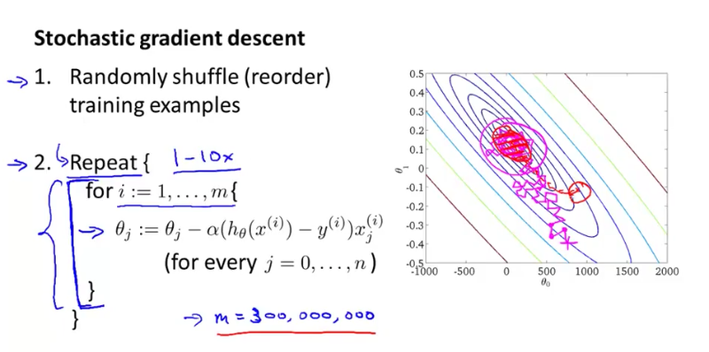
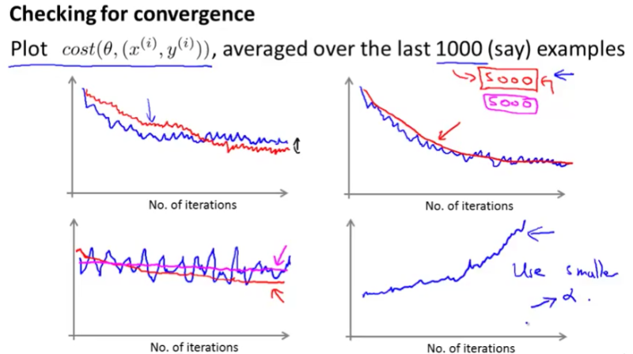
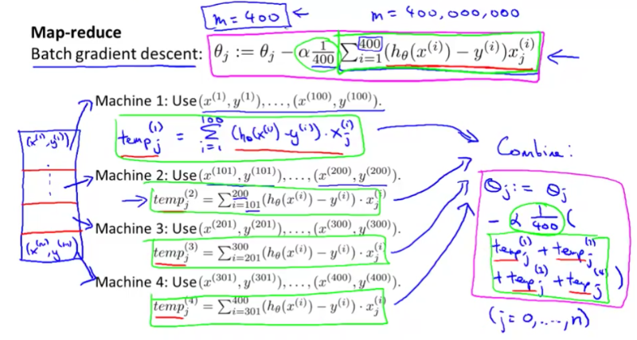

This week’s machine learning course is about training large dataset and Stochastic Gradient Descent.
What is the problem with learning with large dataset?
When training the parameters with a large dataset, such as 100 million training examples or even more, we may not be able to fit all training example into memory. However, we do need all the training examples to calculate partial derivatives for all the parameters. That means, for each step of gradient descent, we have to calculate the next θ value by accumulating the h(θ) - y of all the training examples. How can we deal with that if the training example is too large to fit into memory?
Three solutions
- Stochastic Gradient Descent
- Mini-Batch Gradient Descent (may be more efficient)
- Map Reduce (multiple machines)
Stochastic Gradient Descent
Each update of θ is calculated by only one training example. Stochastic gradient descent is much faster than Batch gradient descent. Each baby step -update θ values - of Batch gradient descent uses all training examples, whereas each baby step of Stochastic gradient descent uses only one training example. But one caveat here is that even though the baby steps of Stochastic gradient descent will generally move the parameters in the direction of the global minimum, but not always. In fact as you run Stochastic gradient descent it doesn’t actually converge in the same sense as Batch gradient descent does, and what it ends up doing is wandering around continuously in some region that’s close to the global minimum, but it doesn’t just get to the global minimum and stay there. In practise, it isn’t a problem though since it will be a pretty good hypothesis.

Stochastic gradient descent convergence
We can plot a learning curve to check if the our stochastic gradient descent is converging when more and more iterations. The x-axis is the number of iterations, and the y-axis is the cost function. As we can see in the top-left figure, we get a slightly better result when we use a smaller learning rate. The top-right figure shows we get a more smoothy curve when calculating the cost function every 5000 iterations instead of every 1000 iterations. The bottom-right figure shows if the learning rate is too large, the learning curve might end up diverging.

Mini-Batch Gradient Descent
It’s just another variation of stochastic gradient descent. Instead of calculating one training example at a time, it calculates multiple (mini batch) training examples. Mini-batch gradient descent is likely to outperform Stochastic gradient descent only if you have a good vectorised implementation, paralleling your computation.
Map Reduce
All learning algorithms that can be expressed as a summation over the training set can apply Map Reduce in order to speed up the computation. By paralleling the computation over different computers. So whether it’s Linear Regression, Logistic Regression, or Neural Network, they can all apply map reduce. For example, if we have 400 million training examples, we can partition them into 4 computers and each computer calculates one fourth of the training examples, before another machine combines the 4 results together to calculate the partial derivative.

What is Online Learning?
When you can continuously have streams of new training examples and you don’t want to save all the previous training examples because you constantly have new data. Then you can use Online learning. It continuously (forever) calculate the stochastic gradient descent.